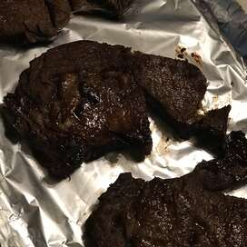

Simple Steak Marinade
A very basic recipe to flavor your steaks. Nothing fancy or complicated here! I made this to take advantage of some of the sauces in my fridge that seem to never
get used enough, hopefully this helps you in the same way!

Ingredients
Equal Parts:
- Balsalmic Vinegar
- A1 Steak Sauce
- Worchestershire Sauce
- About 1 tablespoon of whiskey
Seasoning, the amount depends on your taste but I recommend at least 1 teaspoon each of the following:
- Cinnamon
- Thyme
- Rosemary
- Red Pepper Flakes
- Salt
- Pepper
- Sugar
- Brown sugar
Cooking Steps
- In the bag or other container that you'll be marinating your steak in; add the balsalmic vinegar, steak sauce, worhcestershire sauce, and a dash of whiseky.
Mix together and taste, adjust the ratio of the liquids as desired.
- Next, add 1 teaspoon of each of the seasonings and mix. Taste again and add more seasoning or sauces until you like the taste.
- Finally, add your steak or other meat of choice and massage in the mixture. Recommend marinating for at least 1 day, but the longer the better! Enjoy!